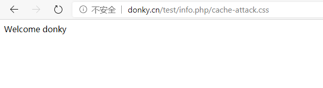
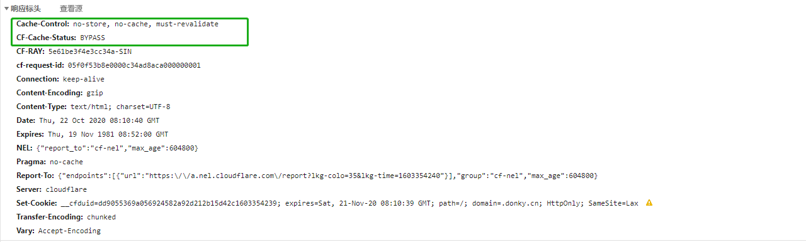
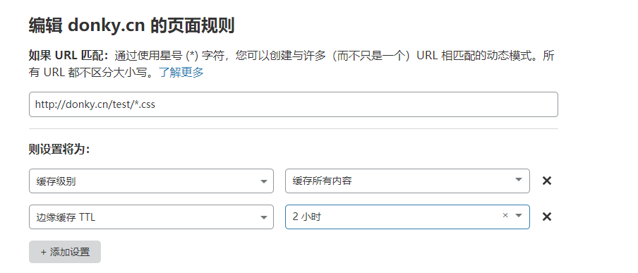

文章首发于安全客，链接https://www.anquanke.com/post/id/225955
Web Cache Attack
Web缓存欺骗和Web缓存投毒攻击方式
关于缓存
由于现在网站应用的复杂性，通常一个首页就会进行大量资源的加载，为了使用户更快的加载网页，几乎都会使用缓存，即将一些常用的静态文件，存储起来，当之后再需要这些静态资源的时候，直接就可以拿出来使用。浏览器缓存就是将缓存文件存储在本地，从而减少重复的请求，服务端缓存就是将缓存文件存储在客户端与服务端之间的CDN或者一些代理服务器中。
目前针对Web缓存的攻击方式有很多，以CDN为例，通俗来说，如果CDN会将一些攻击者构造的有害数据或者这些有害数据造成的Web应用异常的响应缓存起来，然后其他用户可以获取，那么将造成用户被攻击，即缓存投毒，如果CDN会将用户的敏感信息缓存起来，然后攻击者可以获取，那么将造成用户数据泄露，即Web缓存欺骗。
Web缓存欺骗
info.php可以获取用户名并展示
接着将网站接入了CloudFlare CDN。而最终目的就是攻击者获取正常用户的用户名，真实环境中可以获取更多敏感信息。
攻击方法
用户正常访问网站并登录获取info.php
攻击者构造
http://donky.cn/test/info.php/cache-attack.css链接并诱导用户访问用户访问
http://donky.cn/test/info.php/cache-attack.css，请求到达CDN，CDN第一次接收到此请求，直接转发到源站源站返回带有
usernmae的info.php的内容CDN获取到
info.php的内容并转发给用户，此时CDN缓存机制发现此请求路径文件拓展名为css，缓存此文件攻击者访问
http://donky.cn/test/info.php/cache-attack.css，CDN发现此请求可以命中缓存，返回info.php内容给攻击者攻击者获取用户的
info.php内容
攻击分析
上述是一个理想的攻击链，但是实际情况并不如此
当访问用户
http://donky.cn/test/info.php/cache-attack.css
由于环境是一个简单的php程序，并没有使用任何框架，没有进行相关路由配置，php忽略了url中
info.php后面的cache-attack.css直接返回了info.php的内容，这是攻击成功的第一个条件。接着我们用攻击者的角度去访问这个url
发现并没有获取到用户的
username
从响应可以看到，
CF-Cache-Status: BYPASS;Cache-Control: no-store, no-cache, must-revalidate，CF-Cache-Status是CloudFlare对与此请求缓存的状态记录，可以在CloudFlare-Doc查询对于源站来说，很明显
http://donky.cn/test/info.php/cache-attack.css这个请求返回的并不是静态资源是不允许缓存的，所以在返回包内设置了Cache-Control: no-store, no-cache, must-revalidate，当CloudFlare获取到这种no-store时，自然不会进行缓存所以要想Web缓存欺骗攻击成功，必须保证缓存服务器会把
info.php/cache-attack.css的内容当作css静态资源来进行缓存，这是攻击成功最重要的条件，想到达到这条件有两种方法，源站返回可以进行缓存的Cache-Control或者缓存服务器忽略源站返回的Cache-Control从而进行缓存。显然第一种方式很难出现，但是对于第二种方式却在很多情况下都可以进行配置，由于网站的复杂性，很多缓存服务器可以自定义缓存策略，以测试的CloudFlare为例，可以通过Page Rule来进行配置，下图可以通过正则的方式实现在
test目录下的所有css文件都可以进行缓存
因为
http://donky.cn/test/info.php/cache-attack.css正好匹配中http://donky.cn/test/*.css，所以CloudFlare会直接将info.php的内容缓存起来再次测试上述攻击利用链，当用户访问
http://donky.cn/test/info.php/cache-attack.css时，响应包中出现Cache-Control: max-age=14400, must-revalidate; CF-Cache-Status: MISS，此时源站返回的Cache-Control已经被CloudFlare忽略，并设置了缓存信息，由于第一次请求这个url，所以在缓存中是MISS状态，当攻击者再次访问时，会返回缓存的info.php内容，响应包中含有Cache-Control: max-age=14400, must-revalidate; CF-Cache-Status: HIT; Age: 281，命中缓存，达到攻击效果。
Web缓存欺骗总结
攻击条件
- 源站应用能够忽略url中正常请求路径后面的静态文件名
- 缓存服务器能够忽略源站返回的
Cache-Control，并把请求获取的内容当作静态文件一样缓存
对应防御措施
- 源站对于
http://donky.cn/test/info.php/cache-attack.css这种请求，应该做相应的正确处理，而不是仅仅忽略后面的静态文件名 - 缓存服务器对于源站返回的含有不能进行缓存指令的HTTP头的数据不进行缓存
- 源站对于
Web缓存投毒
缓存键
由于缓存服务器会缓存一些请求返回的内容，然后当再次接收到相同的请求时，便可以直接取出缓存中的内容返回给客户端。但是如何辨别一个请求是否和缓存中的请求等效，是一件复杂的事情。http头部字段冗杂，通过设置某些字段为缓存键，当缓存键相同时，就认为可以从缓存中取文件资源。
攻击场景
请求中一些非缓存键，会影响Web应用返回的响应内容（如把值拼接到返回内容中），并且如果这种请求获取的响应可以被缓存，那么之后的正常用户就会受到攻击。
unity3d.com就出现过这种问题
GET / HTTP/1.1
Host: unity3d.com
X-Host: portswigger-labs.netHTTP/1.1 200 OK
Via: 1.1 varnish-v4
Age: 174
Cache-Control: public, max-age=1800
…\
Web应用把
X-Host的值拼接到了返回内容的script标签中，这样可以直接造成XSS，Age: 174和Cache-Control: public, max-age=1800可以确认这个请求的响应是会进行缓存的，下一次更新缓存的时间可以通过Age和max-age来确定，这样就能将自己的XSS payload精准地注入到缓存中，达到攻击其他用户的效果。在很多场景下，当我们获取到非缓存键影响的响应内容时，应该搞清楚输入的非缓存键到底影响了什么内容，我们能控制哪些内容，这样才能为之后的攻击创造条件。
引用
https://www.4hou.com/posts/MQkO
https://support.cloudflare.com/hc/en-us/articles/200172516-Understanding-Cloudflare-s-CDN
https://support.cloudflare.com/hc/zh-cn/articles/115003206852